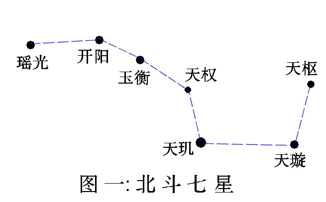
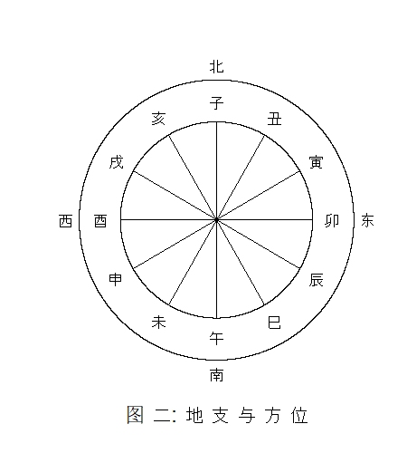

初稿: 2018年10月 最近一次重大修订: 2019年4月
干支是中国传统的纪数系统，现在还在使用。干支纪数是由天干和地支组合。天干有十个，地支有十二个，每一个地支有一种动物与之对应，称为生肖或属相。下表列出所有天干、地支及其对应的十二生肖。
| 天干 | 地支 | 生肖 | ||
|---|---|---|---|---|
| 1 | 甲 | 1 | 子 | 鼠 |
| 2 | 乙 | 2 | 丑 | 牛 |
| 3 | 丙 | 3 | 寅 | 虎 |
| 4 | 丁 | 4 | 卯 | 兔 |
| 5 | 戊 | 5 | 辰 | 龙 |
| 6 | 己 | 6 | 巳 | 蛇 |
| 7 | 庚 | 7 | 午 | 马 |
| 8 | 辛 | 8 | 未 | 羊 |
| 9 | 壬 | 9 | 申 | 猴 |
| 10 | 癸 | 10 | 酉 | 鸡 |
| 11 | 戌 | 狗 | ||
| 12 | 亥 | 猪 | ||
干支纪数由甲子(1,1)起，然后是乙丑(2,2)、丙寅(3,3)、丁卯(4,4)……癸酉(10,10)。到癸酉时天干用尽了，之后的规则是凡是天干或地支用尽后须从头数起，所以癸酉之后是甲戌(1,11)、乙亥(2,12)、丙子等等直到癸亥(10,12)。癸亥后的干支是甲子(1,1)，然后是乙丑(2,2)等等循环不息。如下表所示，从甲子到癸亥一共有六十个干支。
| 1 | 甲子 | 16 | 己卯 | 31 | 甲午 | 46 | 己酉 |
| 2 | 乙丑 | 17 | 庚辰 | 32 | 乙未 | 47 | 庚戌 |
| 3 | 丙寅 | 18 | 辛巳 | 33 | 丙申 | 48 | 辛亥 |
| 4 | 丁卯 | 19 | 壬午 | 34 | 丁酉 | 49 | 壬子 |
| 5 | 戊辰 | 20 | 癸未 | 35 | 戊戌 | 50 | 癸丑 |
| 6 | 己巳 | 21 | 甲申 | 36 | 己亥 | 51 | 甲寅 |
| 7 | 庚午 | 22 | 乙酉 | 37 | 庚子 | 52 | 乙卯 |
| 8 | 辛未 | 23 | 丙戌 | 38 | 辛丑 | 53 | 丙辰 |
| 9 | 壬申 | 24 | 丁亥 | 39 | 壬寅 | 54 | 丁巳 |
| 10 | 癸酉 | 25 | 戊子 | 40 | 癸卯 | 55 | 戊午 |
| 11 | 甲戌 | 26 | 己丑 | 41 | 甲辰 | 56 | 己未 |
| 12 | 乙亥 | 27 | 庚寅 | 42 | 乙巳 | 57 | 庚申 |
| 13 | 丙子 | 28 | 辛卯 | 43 | 丙午 | 58 | 辛酉 |
| 14 | 丁丑 | 29 | 壬辰 | 44 | 丁未 | 59 | 壬戌 |
| 15 | 戊寅 | 30 | 癸巳 | 45 | 戊申 | 60 | 癸亥 |
干支可用来纪年、纪月、纪日和纪时，但是现在已很少用干支来纪月、纪日和纪时了。下面简略介绍如何用干支来纪年、纪月、纪日和纪时。
现在的农历年一般只用干支纪年，六十年循环一周。最近一周始于1984年农历甲子年。其他公历y年的农历年干支可用同余算术算出。所谓公历y年的农历年是指年首最接近公历y年1月1日的农历年。例如2018年的农历年是指农历戊戌年，始于公历2018年2月16日，终于2019年2月4日。
农历年的天干十年循环一周，年地支十二年循环一周。已知1984年的农历年干支为甲子，可推出公历y年之农历年天干数为 1 + [(y+6) mod 10]，即将公历年数加六，除以十，然后把所得的余数加一。年地支数为 1 + [(y+8) mod 12]。依此可算出2018年之农历年天干数为五，即戊，地支数为十一，即戌。所以2018年之农历年干支是戊戌。
月建是指农历月的地支名，但不计闰月，闰月没有月建。由于一年有十二个月(不计闰月)，每一个月有固定的月建。建子月取含冬至的月份，建丑月是下一个月(不计闰月)，余类推。月建在早期历法颇为重要。
传说早期各朝代以不同的月建作为一年的年首。据说夏代以建寅(即现在的正月)的月份为第一个月;商朝以建丑(即现在的十二月)为第一个月;周朝以建子的月份(现在的十一月)为第一个月。每次更改月份次序，就把更改后的第一个月称为「正月」，「正」是改正的意思。所以夏正为建寅，殷正为建丑，周正为建子。夏正、殷正和周正称为「三正」。
现在一般认为三正之传说不可信。战国时代，各国施行不同历法，当时通行的历法主要有六种:周历、鲁历、殷历、夏历、黄帝历和颛顼历，合称「古六历」。六历之名并非是不同时期不同朝代所制定，而是战国时期的历法家托古而作。所谓「三正」，只是指夏历、殷历和周历所用的三个不同年首。所以「三正」不是夏商周三朝交替使用的历法年首，而是春秋战国时期不同地域施行历法的三个不同年首。
秦朝的历法和颛顼历很接近，两者都是以建亥(现在的十月)作为一年之始，但仍依夏历称建亥为十月，历法的月序是十月、十一月、十二月、正月、二月……九月。汉朝建立后基本上沿用秦历，直到汉武帝太初元年(公元前104年)才颁行新历法，以建寅(正月)为年首。此后二千多年来，除了王莽和魏明帝一度改用殷正，武则天和唐肃宗一度改用周正外，一般都用夏正，到现在仍通行。
最后要指出，「建」是指北斗七星的斗柄，即玉衡、开阳和瑶光三星(见图一)。方位可用十二地支表示，方法是将地平圈分为十二等分来配十二地支，北方是子，东方是卯，南方是午，西方是酉(见图二)。在古代，北斗七星比现在更接近北天极，在中原地区(约北纬35°)大约在唐朝以前斗柄全年都在地平线之上，那时冬至傍晚可见斗柄指向北(子)，所以含冬至的月份称为建子。由于岁差的原故，现在北斗七星离北天极较远。在中原地区，冬至傍晚瑶光在地平线以下，玉衡和开阳在北方地平线符近。现在要去到北纬41°以北的地方才可看到斗柄北指。北纬41°大概在现在的内蒙古呼和浩特市、河北省承德市、辽宁省锦州市等地区。
 
干支纪月较为复杂，据维基百科所述，有两种干支纪月法。我在年历网页里使用了第一种纪月法。其实干支纪月即使在古代的史书和日历里也不常用，干支纪月最常用于占卜和风水。年历网页里自汉武帝太初元(公元前104年)起才注有月干支。这里姑且也简单介绍两种干支纪月法。
此一纪法以农历月配干支，但不计闰月，闰月的干支取上一月的干支。纪法是把月建配上天干，六十月(即五年)循环一周。由于年天干的周期是十年，年干与月干有二对一的对应关系。例如年干为甲或己时，正月的干支必然是丙寅，二月是丁卯，其余可以类推。下表列出月干支与年天干的关系。
| 年天干 | 正月 | 二月 | 三月 | 四月 | 五月 | 六月 | 七月 | 八月 | 九月 | 十月 | 十一月 | 十二月 |
|---|---|---|---|---|---|---|---|---|---|---|---|---|
| 甲、己 | 丙寅 | 丁卯 | 戊辰 | 己巳 | 庚午 | 辛未 | 壬申 | 癸酉 | 甲戌 | 乙亥 | 丙子 | 丁丑 |
| 乙、庚 | 戊寅 | 己卯 | 庚辰 | 辛巳 | 壬午 | 癸未 | 甲申 | 乙酉 | 丙戌 | 丁亥 | 戊子 | 己丑 |
| 丙、辛 | 庚寅 | 辛卯 | 壬辰 | 癸巳 | 甲午 | 乙未 | 丙申 | 丁酉 | 戊戌 | 己亥 | 庚子 | 辛丑 |
| 丁、壬 | 壬寅 | 癸卯 | 甲辰 | 乙巳 | 丙午 | 丁未 | 戊申 | 己酉 | 庚戌 | 辛亥 | 壬子 | 癸丑 |
| 戊、癸 | 甲寅 | 乙卯 | 丙辰 | 丁巳 | 戊午 | 己未 | 庚申 | 辛酉 | 壬戌 | 癸亥 | 甲子 | 乙丑 |
从上表可方便算出任何农历年的月干支。例如2018年是农历戊戌年，从上表可知年天干为戊的五月干支是戊午，所以戊戌年的五月干支是戊午。有《五虎遁月歌》歌诀以便记忆正(寅)月的月干与年干的关系: 甲己之年丙作初，乙庚之岁戊为头，丙辛岁首从庚起，丁壬壬位顺流行，若问戊癸何方法，甲寅之上好推求。
其实要算出某年的月干只需记住年干为甲时正月的月干是丙就可以了，其他月的月干可先计算其与甲年干的月数，然后用同余算术推出其月干。这里以戊戌年五月为例，戊是甲之后的四个天干，所以如果以甲年算起，戊年五月就是甲年的 (4×12+5) 或五十三月，戊年五月的天干是丙往下数第五十二个天干，由于 52 mod 10 = 2，即五十二除以十之余数为二，丙以后的第二个天干是戊，所以戊戌年的五月的干支是戊午。
这种纪法不依农历的月份，而是根据二十四节气分月。子月定为由大雪至小寒前一日，丑月定为由小寒至立春前一日等等。下表列出各月对应的节气段，近似农历月份，和近似的公历日期。
| 月地支 | 节气段 | 近似农历月份 | 近似公历日期 |
|---|---|---|---|
| 子 | 大雪至小寒前一日 | 十一月 | 12月7日–1月5日 |
| 丑 | 小寒至立春前一日 | 十二月 | 1月6日–2月3日 |
| 寅 | 立春至惊蛰前一日 | 正月 | 2月4日–3月5日 |
| 卯 | 惊蛰至清明前一日 | 二月 | 3月6日–4月4日 |
| 辰 | 清明至立夏前一日 | 三月 | 4月5日–5月5日 |
| 巳 | 立夏至芒种前一日 | 四月 | 5月6日–6月5日 |
| 午 | 芒种至小暑前一日 | 五月 | 6月6日–7月6日 |
| 未 | 小暑至立秋前一日 | 六月 | 7月7日–8月7日 |
| 申 | 立秋至白露前一日 | 七月 | 8月8日–9月7日 |
| 酉 | 白露至寒露前一日 | 八月 | 9月8日–10月7日 |
| 戌 | 寒露至立冬前一日 | 九月 | 10月8日–11月6日 |
| 亥 | 立冬至大雪前一日 | 十月 | 11月7日–12月6日 |
二十四节气是根据太阳在天球上的位置而定，不考虑月相，所以是纯阳历。公历也是纯阳历，所以以上各月的公历日期每年最多只有一两日之差。农历是阴阳历，既考虑月相也顾及太阳位置，以上各月的起始日期在农历中可以有多至三十日的变动。
古代称由冬至到下一个冬至的周期为岁，称由农年正月初一到下一年正月初一的周期为年。所以岁是纯阳历的概念，而年则属阴阳历。一岁的周期是三百六十五或三百六十六日，平均值接近回归年(365.242日)。一年的周期大约是三百五十四日(无闰月时)或约三百八十四日(有闰月时)。用这种节气定月的法则，一岁有十二个月，每月大至有三十或三十一日，没有闰月。月份配上天干，六十月(即五岁)循环一周。
日的干支可从该日的儒略日数以同余算术推出。儒略日数是从公元前4713年1月1日正午算起的日数。公历某月日的儒略日数有公式计算(例如维基百科)。也有网站提供儒略日数计算器(例如 Julian Date Converter)。已知公元1949年10月1日的日干支为甲子，该日正午的儒略日数是2433191。日干的周期为十日，日支的周期为十二日，由此可推出某日之天干数为 1 + [(JD-1) mod 10] ，地支数为 1 + [(JD+1) mod 12]，此处JD指该日正午之儒略日数。
古时将一日分为十二时辰。用现在通用的时间系统来说，一时辰相当于现在的二小时。 十二时辰正好配十二地支，所以时辰一般只提地支，不理天干。以现时通用的时间 系统来说，子时是晚上十一时至凌晨一时，丑时是凌晨一时至三时，其余可以类推。
十二时辰配上天干后，就有六十时辰(即五日)的周期。日干的周期是十日，所以日干与时干有二对一的对应关系，颇似年干与月干的关系。日干与时干也有类似的对照表，但我认为只须知道日干为甲的子时天干是甲就可以了，其他时干可用同余算术推出。这里以丁日的未时为例，丁是甲之后的第三个天干，未是第八个地支，丁日的未时即从甲日算起的第(3×12 + 8)个时辰，即第四十四个时辰，所以其天干是从甲起往下数四十三个天干，四十三除以十余数是三，甲之后第三个天干是丁，所以丁日未时的时辰干支是丁未。